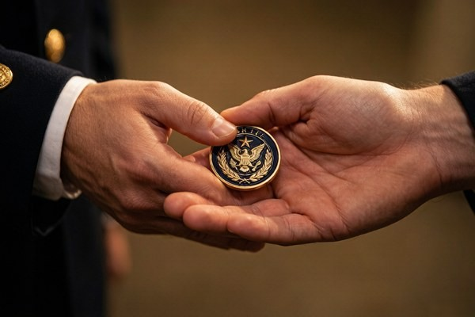
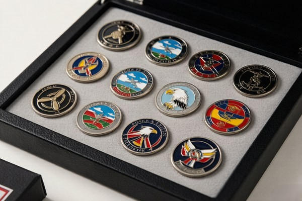

A Brief History of the Challenge Coin
The most widely told origin story traces the challenge coin back to World War I. According to the legend, a wealthy American officer had bronze medallions struck for the pilots in his squadron. One of those pilots, later shot down and captured by the enemy, escaped and eventually reached French lines. Because he had no identification, he was nearly executed as a saboteur — until he produced his squadron medallion, which a French soldier recognized. The coin saved his life, and from then on he kept it around his neck.
Whether every detail of that story is true is impossible to prove, but the tradition it describes is real: a challenge coin became a mark of belonging, carried at all times and produced on demand. Over the following decades, the practice spread from aviation units through the broader military, then into law enforcement, fire departments, and eventually the corporate world.
Today, challenge coins are given to recognize achievement, commemorate service, and build camaraderie. They have moved well beyond their military roots, but many of the original customs — including the coin check — still carry weight among those who know the tradition.
What Is a Challenge Coin, Exactly?
A challenge coin is a small, custom-made metal coin, typically two to three inches across, that represents membership in a group or recognition of an achievement. They are usually carried in a pocket and produced on demand to prove membership. Unlike currency, a challenge coin has no face value — its worth comes entirely from what it represents.
The front of a coin usually carries the group's emblem or logo, while the back might hold a motto, a date, or a symbol of the group's values. Because they are custom-made, every coin tells a specific story about the unit, team, or event that issued it. That personal meaning is what gives a challenge coin its emotional weight.
For anyone ordering a first coin, choosing the right style matters. Classic soft enamel gives a traditional feel, while minted proof finishes create a collectible, struck-coin look. The style you choose helps set the tone for how the coin is received and carried.
The Coin Check, Explained
The coin check is the best-known challenge coin game, and it works like this: someone produces their coin and slaps it down on a table or bar. Everyone present who carries a coin is then required to produce theirs. If you cannot produce a coin, you owe a round of drinks for the group. If everyone produces a coin, the person who initiated the check buys the round instead.
There are a few finer points that separate the casual version from the "official" rules. In the traditional interpretation, the coin check can be initiated at any time, and once initiated, there is a grace period of roughly one step and an arm's reach to produce your coin. Dropping your coin — rather than placing it on the table — is generally considered a check that you have lost, and it still counts.
Some groups add their own variations: a coin check called during a meal, for example, might require the loser to buy dessert as well. The spirit of the game is lighthearted, and the rules are usually enforced with a wink rather than strict formality. The point is not to punish anyone but to keep the tradition alive and everyone on their toes.
How to Carry a Challenge Coin
A challenge coin is meant to be carried at all times — that is the entire premise of the coin check. Most people carry a coin in a pocket, a wallet, or a small coin pouch. If you receive a coin that is important to you, carrying it regularly is part of honoring the gesture, and it keeps you ready for an unexpected check.
Some collectors carry a "carry coin" — a less valuable piece they are willing to produce and potentially lose — while keeping rarer or more sentimental coins safe at home. This is a practical compromise if you own several coins and want to participate in checks without risking a meaningful piece.
How to Present a Challenge Coin
The classic way to present a challenge coin is in a handshake, palm to palm, so the exchange happens discreetly between two people. The coin sits in the giver's palm and passes into the receiver's hand during the handshake, often without a word. This quiet method reflects the idea that the recognition is personal and earned, not performed for an audience.
There is no single "correct" moment to give a coin, but it is most meaningful when tied to a specific achievement or occasion — a promotion, a completed mission, a retirement, or a job well done. A coin given casually, with no context, still carries weight, but pairing it with a brief word about why it is being given makes the gesture far more memorable.
In more formal settings, coins are sometimes presented at a ceremony or in front of the group, with a short speech explaining the recognition. This public presentation is common in military and law enforcement settings, where the coin serves as a visible symbol of appreciation.
How to Receive a Challenge Coin

If someone hands you a challenge coin, receive it with respect. The traditional guidance is to accept the coin with both hands, or at least to acknowledge the gesture genuinely rather than pocketing it absentmindedly. A coin given in recognition is a marker of trust and respect, and it deserves to be treated as more than a trinket.
There is no formal obligation attached to receiving a coin, but it is generally understood that the coin is meant to be kept, not sold or regifted. If a coin was earned through service or achievement, passing it on to someone else is usually considered poor form, unless the giver explicitly intends it as a gift that can be shared.
Challenge Coin Etiquette in the Military
In military settings, the challenge coin carries its strongest traditions. Coins are typically issued by commanders or units to recognize outstanding performance, and carrying a coin is often considered a mark of pride and belonging. The coin check, while informal, is still played, and being caught without a coin is a good-natured way to owe the group a round.
Military coins frequently feature the unit's insignia, motto, and values, and they are often designed with a traditional look — 3D relief and antique finishes are especially popular for the sense of history and gravitas they convey. For anyone ordering coins for a unit, matching that traditional style helps the coin feel authentic to the culture it represents.
Challenge Coins in Police and Fire Departments
Police and fire departments adopted the challenge coin tradition as an extension of military culture, and the customs are very similar. Coins recognize acts of bravery, years of service, and unit solidarity, and they are often presented at formal ceremonies or quietly in a handshake between colleagues.
A police or fire coin typically carries the department's badge, emblem, and a line like the thin blue or thin red line, symbols that carry deep meaning within those communities. The coin check is less formal in these settings but still appears at gatherings and retirements, where it serves the same purpose: a shared ritual that reinforces belonging.
Challenge Coins in Business and Civilian Life
Outside the uniformed services, the challenge coin has become a popular corporate recognition tool. Companies issue coins to mark milestones, thank employees, and celebrate teams. The etiquette is more relaxed than in the military — there is rarely a coin check — but the spirit of recognition remains the same: a coin is a tangible, lasting way to say "you earned this."
For businesses, the design priorities shift. A corporate coin often leads with the company logo and brand colors, and it may favor a polished, premium finish like hard enamel. The goal is the same as in any tradition: give people something they are proud to carry and display.
Displaying and Collecting Coins
Many people who receive challenge coins become collectors, displaying them in coin cases, shadow boxes, or on desk stands. Displaying coins is a common and accepted practice, and it is a meaningful way to keep the story of each coin visible. There is no etiquette against displaying a coin you have earned — in fact, it is usually a point of pride.
When building a collection, keep coins organized by the occasion or the group that issued them. Some collectors document the story behind each coin, which adds to the collection's value over time. And if you carry coins regularly, remember the advice from earlier: keep a carry coin separate from the pieces you want to preserve.
Choosing the Right Coin Style for Your Group
The style of coin you choose helps set the tone of the tradition you are building. A military or law enforcement unit often leans on traditional looks — 3D relief and antique finishes convey history and gravitas — while a corporate team might prefer the clean, polished surface of hard enamel.
The finish also shapes how the coin is carried and displayed. A bright, glossy coin reads as a modern recognition piece, while an antique-finish coin feels like a relic with a story. There is no wrong answer, but choosing deliberately — with the group's culture in mind — makes the coin feel like it belongs to the people receiving it.
If you are ordering coins for the first time and want guidance on the full range of options, our product catalog walks through every style, from classic enamel to functional pieces like bottle opener coins and interactive spinner coins.
Challenge Coin Do's and Don'ts

Most challenge coin etiquette boils down to a short list of sensible do's and don'ts that apply in nearly every setting:
- Do carry your coin, especially if you belong to a group that plays the coin check.
- Do present a coin in a handshake, palm to palm, with a word about why it is being given.
- Do receive a coin with respect and keep it — a coin given in recognition is a marker of trust.
- Do display earned coins with pride; a collection tells the story of your service and achievements.
- Don't sell or regift a coin you were given, unless the giver intends otherwise.
- Don't carry a sentimental coin you cannot afford to lose — keep a carry coin instead.
- Don't take the coin check too seriously; it is meant to be lighthearted.
Challenge Coin Etiquette in the Workplace
The challenge coin has become a popular tool in the corporate world, and with it comes a lighter, more flexible version of the traditional etiquette. Companies issue coins to mark milestones, recognize outstanding work, and celebrate teams, and the customs are usually more relaxed than in a military unit — there is rarely a coin check, and the rules around carrying are looser.
That said, the core spirit carries over: a coin is a token of recognition, and it should be given with intention and received with appreciation. If you are introducing coins to your workplace, a short explanation of what the coin represents helps colleagues understand why it matters, rather than seeing it as a novelty.
When giving a coin at work, tie it to a specific accomplishment — a project completed, a milestone reached, or a job exceptionally well done. A coin given with a sentence about why it is being given is far more meaningful than one handed over without context, and it sets the right tone for the tradition you are building.
What to Do If a Coin Is Lost or Damaged
Challenge coins are small, and they occasionally get lost or damaged despite the best intentions. If you lose a coin that was given to you, the honest approach is to let the person who gave it to you know. Most people understand, and many will gladly replace it, especially if it was a coin they issued in quantity.
If a coin is damaged through normal handling, a little wear is generally seen as a sign that the coin was actually carried and used — which is the whole point of the tradition. Serious damage is different, and if a coin that matters to you is damaged, reaching out to the issuer for a replacement is perfectly reasonable.
Giving Coins as Gifts Outside Your Organization
Challenge coins are increasingly given as thoughtful gifts outside the issuing organization — to a retiring colleague, a business partner, a first responder, or a valued client. In these cases, the etiquette is simpler: the coin is a token of appreciation, and the gesture itself carries the meaning. There is no obligation attached, and the coin is meant to be kept as a keepsake.
If you are giving coins outside your group, choose a design that resonates with the recipient rather than one that only makes sense internally. A coin with a universal symbol of appreciation — a handshake, a star, or a simple, elegant emblem — travels better than one covered in inside references. The best gift coins are the ones that feel personal to the person receiving them.
When Not to Initiate a Coin Check
The coin check is meant to be lighthearted, and part of good etiquette is knowing when it is not appropriate. Avoid initiating a check at a formal event, a funeral, or any setting where a round of drinks or a playful challenge would feel out of place. The tradition thrives on good humor, and forcing it into the wrong moment turns a bonding ritual into an awkward one.
It is also worth reading the room. If you are in mixed company where most people do not carry coins, initiating a check can feel exclusionary rather than fun. A good rule of thumb: the coin check is for groups that share the tradition, not a tool to catch outsiders off guard. When in doubt, keep the coin in your pocket and let the moment pass.
How the Challenge Coin Tradition Has Evolved
The challenge coin has come a long way from its rumored World War I origins. What began as a marker of military identity spread through the armed forces over decades, then into law enforcement and fire services, and eventually into the corporate world and civilian life. Along the way, the customs softened and adapted to each new setting, but the core idea never changed: a coin is a tangible symbol of belonging and recognition.
Technology has changed the coins themselves. Early coins were simple struck metal; today they can feature full-color enamel, 3D relief, photo-realistic UV printing, and even functional designs like bottle openers. The tradition has kept up with the times without losing its meaning.
What has not changed is the emotional weight of the gesture. Whether the coin is struck from bronze in a military unit or printed in full color for a tech company, handing someone a coin still says the same thing: you belong here, and your contribution is recognized. That is why the tradition endures, and why it will keep spreading.
Challenge Coin Sayings and Mottos
A short motto or saying is one of the most common elements on a challenge coin, and choosing the right words is part of the craft. Military and first-responder coins often carry mottos about duty, courage, and brotherhood — phrases like "honor, courage, commitment" or a unit's own motto — because those words carry the weight of shared experience. Corporate coins, by contrast, might carry a brand tagline or a short value statement.
The best coin mottos are short enough to read at a glance and specific enough to mean something to the group. A generic phrase like "excellence" or "pride" is less memorable than a motto tied to the group's actual identity — a unit's nickname, a founding principle, or a line from a shared tradition. When in doubt, borrow from what the group already says about itself.
Placement matters too. Mottos are often set around the outer ring of the coin, where they read naturally and frame the central emblem. Keep the lettering legible, convert fonts to outlines, and resist the urge to crowd too many words onto the rim. A few well-chosen words beat a paragraph every time.
Frequently Asked Questions
Do I have to carry a coin?
Not strictly, but if you receive one, carrying it honors the gesture and keeps you ready for a coin check.
Can I give a coin I received to someone else?
Generally no — a coin given to you is meant to be kept, unless the giver intends otherwise.
Is the coin check serious?
It is a lighthearted tradition, usually enforced with good humor rather than strict rules.
Can civilians participate?
Absolutely. The tradition has spread far beyond the military, and the etiquette is more relaxed in civilian settings.
Conclusion
Challenge coin etiquette is ultimately about respect — respect for the group that issued the coin, for the person who gave it, and for the tradition itself. Whether you are carrying a coin in your pocket, presenting one to a teammate, or collecting them on a shelf, the customs are there to make the gesture meaningful.
If you are ready to create a coin for your own unit, team, or company, get a free quote and digital proof here. A well-made coin is the first step in a tradition your people will carry for years.
At its heart, the etiquette is simply about respect — for the people who issued the coin, for the person who handed it to you, and for the tradition itself. Carry it with pride, pass it on with intention, and the rest of the rules take care of themselves.
And if you are ever unsure what a particular situation calls for, the simplest guideline covers almost every case: treat the coin — and the person who gave it to you — with genuine respect.